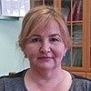

Дошкольное отделение школы № 1002
В 2015 году 30% первоклассников Школы № 1002 пришли из дошкольного отделения.
- Солнцевский проспект, 12Б
- улица Щорса, 4к4
- Солнцевский проспект, 14к1
Воспитатели
Воспитатели, которых чаще всего благодарят родители (отзывы и профили сотрудников взяты с официального сайта школы):|
Воспитатель
Иванова Татьяна Дмитриевна
3 благодарности |
Воспитатель
Кленина Ольга Игоревна
2 благодарности |
Воспитатель
Феофилактова Галина Викторовна
2 благодарности |
Воспитатель
Арзамасцева Наталья Анатольевна
2 благодарности |
|
Воспитатель
Федик Татьяна Васильевна
1 благодарность |
Воспитатель
Стасишена Татьяна Викторовна
1 благодарность |
Ерохина Ирина Анатольевна
1 благодарность |
Помощник воспитателя
Солнцева Татьяна Владимировна
1 благодарность |
|
Помощник воспитателя
Логунова Елена Николаевна
1 благодарность |
 Муз. рук.
Пантелеева Ирина Львовна
Муз. рук.
Пантелеева Ирина Львовна
1 благодарность |

Мустафаева Гуля Аразовна
1 благодарность |
Воспитатель
Махрова Татьяна Витальевна
1 благодарность |
|
Воспитатель
Шадрина Мария Владимировна
1 благодарность |
Отзывы
Данные собраны c официального сайта школы и через форму для отзывов.
Хочу сказать огромное спасибо за прекрасную работу и доброе отношение к детям воспитателям 3 группы 2 дошкольного отделения Ивановой Татьяне Дмитриевне, Чуприниной Наталье Аркадьевне и помощнику воспитателя Логуновой Елене Николаевне.
Спасибо Вам за внимательное и чуткое отношение к детям, за прекрасные поделки, праздники, за все работу, которую Вы непрерывно проводите с детьми. За хороший климат в группе и за то, что ребенок был рад в нее приходить. Мы будем по Вам скучать. Спасибо.
Спасибо Вам за внимательное и чуткое отношение к детям, за прекрасные поделки, праздники, за все работу, которую Вы непрерывно проводите с детьми. За хороший климат в группе и за то, что ребенок был рад в нее приходить. Мы будем по Вам скучать. Спасибо.
Хочу выразить огромную благодарность и признательность всем работникам дошкольного учреждения №1, во главе заведующей Ерохиной Ирины Анатольевны, за внимание и заботу, которую получают наши дети в стенах дошкольного учреждения, в частности, за организацию питания. На родительском собрании, которое проводилось 14 апреля, нам, родителям, было наглядно продемонстрировано, как организуется питание детей в течение всего дня. Для дегустации нам был предоставлен ужин. Было очень вкусно! Могу с уверенностью сказать: я рада, что мой ребенок посещает именно это дошкольное учреждение. Спасибо огромное каждому сотруднику за Ваш труд, неисчерпаемый профессионализм и безграничную любовь к нашим детям!
Спасибо за Ваш отзыв. Надеемся и в дальнейшем не разочаровать Вас.
Спасибо за Ваш отзыв. Надеемся и в дальнейшем не разочаровать Вас.
Хочу выразить огромное благодарность воспитателям дошкольного отделения 1880 Ирина Львовна,Татьяна Васильевна,Любовь Александровна, Ольга Николаевна Вы самые лучшие спасибо большое за такой потрясающий праздник к 8марта! И за ваш вклад в наших детей!!!!Воспитатели с большой буквы!!!
Спасибо. Нам очень важно слышать добрые слова о работе наших коллег.
С уважением, Е.Г. Солодуха
Спасибо. Нам очень важно слышать добрые слова о работе наших коллег.
С уважением, Е.Г. Солодуха
Хочу от всей души сказать спасибо нашим любимым, добрым, внимательным воспитателям группы №10 д.о. 1880. Татьяне Викторовне и Татьяне Витальевне. Такие люди как они должны работать с детьми. Это педагоги которые всегда придут на помощь малышу и его маме при необходимости, вместе порадуются успехам вашего малыша.
Я вожу к ним уже второго ребенка, и каждый раз ухожу от них с мыслью как нам с ними повезло!
Я вожу к ним уже второго ребенка, и каждый раз ухожу от них с мыслью как нам с ними повезло!
Скоро день воспитателя...хороший повод, чтобы еще раз сказать огромнейшее спасибо тем людям, которые порой проводят с нашими детьми больше времени, чем мы сами. Проводят его с неменьшей заботой и добротой, с улыбкой и пониманием, с энтузиазмом и вдохновением!
Уважаемые Галина Викторовна и Наталья Анатольевна! Низкий поклон Вам за ваш труд! Спасибо за то, что наш ребенок с удовольствием бежит в сад, а вечером, став взрослее на один день, он удивляет нас своими новыми открытиями! Хотелось бы пожелать Вам терпения к нашим непоседам:)здоровья и сил! Пусть ваша работа будет Вам только в радость! Пусть ваши воспитанники Вас любят также как и вы их, а родители всячески поддерживают! С праздником!!!!!!
Уважаемые Галина Викторовна и Наталья Анатольевна! Низкий поклон Вам за ваш труд! Спасибо за то, что наш ребенок с удовольствием бежит в сад, а вечером, став взрослее на один день, он удивляет нас своими новыми открытиями! Хотелось бы пожелать Вам терпения к нашим непоседам:)здоровья и сил! Пусть ваша работа будет Вам только в радость! Пусть ваши воспитанники Вас любят также как и вы их, а родители всячески поддерживают! С праздником!!!!!!
Уважаемые Галина Викторовна, Наталья Анатольевна и Татьяна Владимировна! Спасибо вам за то, что все эти годы вы были рядом с нашими детьми. Спасибо вам за то, что все эти годы вы помогали нам воспитывать наших детей, учить их жизни и учили их жить. Мы от всего сердца благодарим вам за ваш не легкий, но такой нужный для миллионов людей труд. Вы облегчаете жизнь многим, при этом сами жертвуя многим в своей жизни. Мы никогда не забудем вас, ваши старания и вашу заботу о наших детях. Спасибо вам за все, с вами было так здорово все эти годы.
Примите сегодня признание наше
За всю доброту и за опытность Вашу,
За то, что растили Вы наших детей!
Нет Вашей профессии в мире нужней,
И дети привыкли все к Вашим рукам,
И сложно теперь объяснить будет нам,
Что глаз Ваших впредь не увидят они,
Идут их года, в них слагаются дни,
И дети, конечно, у нас повзрослели,
Ведь с Вами всегда они были при деле,
То с песней, то с кисточкой, с множеством книжек!
Учили Вы буквам и цифрам детишек,
И нынче они уже в школу пойдут,
И Вам благодарность с любовью несут
Их мамы и папы! И Вам на прощание
Успехов и творчества будет желание,
Спасибо за все, за труд и терпение,
Желаем Вам счастья мы все с вдохновением!
Выражаем свою благодарность всему коллективу нашего прекрасного садика! Спасибо за всё!
Примите сегодня признание наше
За всю доброту и за опытность Вашу,
За то, что растили Вы наших детей!
Нет Вашей профессии в мире нужней,
И дети привыкли все к Вашим рукам,
И сложно теперь объяснить будет нам,
Что глаз Ваших впредь не увидят они,
Идут их года, в них слагаются дни,
И дети, конечно, у нас повзрослели,
Ведь с Вами всегда они были при деле,
То с песней, то с кисточкой, с множеством книжек!
Учили Вы буквам и цифрам детишек,
И нынче они уже в школу пойдут,
И Вам благодарность с любовью несут
Их мамы и папы! И Вам на прощание
Успехов и творчества будет желание,
Спасибо за все, за труд и терпение,
Желаем Вам счастья мы все с вдохновением!
Выражаем свою благодарность всему коллективу нашего прекрасного садика! Спасибо за всё!
Мы - родители ГБОУ школы №1002 дошкольного отделения №1 группы №4,выражаем огромную благодарность нашим воспитателям Светлане Анатольевне, Гуле Аразовне и Наталье Павловне. Хотим отметить их чуткое отношение к детям, заботу, внимание, доброту и теплоту. Дети с радостью идут в сад. В группе царит комфортная теплая обстановка, благодаря пониманию и равноправию. Мы полностью доверяем нашим воспитателям и младшему воспитателю, ведь оставляя наших детей на весь день, нам очень важно знать, что наши детки в надежных руках! Мы спокойны за жизнь и здоровье наших детей! С нами настоящая команда из трех профессионалов! Мы, родители, очень им благодарны и говорим: Спасибо! Нам очень повезло с Вами!
Хочется от всего сердца поблагодарить воспитателей 8 группы "Солнышко": Марию Владимировну и Ольгу Игоревну за труд, терпение, любовь к детям, неиссякаемый поток идей для занятий с детьми и трепетное отношение к своей работе. Мы ходим в эту группу с сентября 2014 года и очень довольны своим выбором, а главное рад ребенок!
Спасибо вам!
С Уважением, мама Екатерины В. - Ольга.
Вложенный файл
Спасибо вам!
С Уважением, мама Екатерины В. - Ольга.
Вложенный файл
Если вы нашли ошибку или неточность, пожалуйста, сообщите нам об этом.
Ученик, выпускник или родитель? Оставьте отзыв о детском саде.